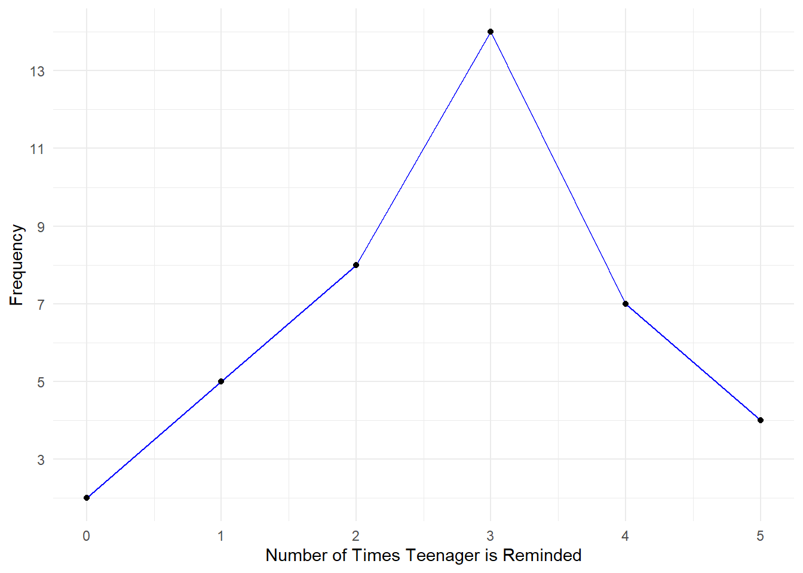

| stem | leaf |
|---|---|
| 3 | 3 |
| 4 | 2 9 |
| 5 | 3 5 |
| 6 | 1 3 7 8 8 9 9 |
| 7 | 2 3 4 8 |
| 8 | 0 3 8 8 8 |
| 9 | 0 2 4 4 4 6 |
| 10 | 0 |
2.1 - Stem-and-Leaf Graphs (Stemplots), Line Graphs, and Bar Graphs
Stem-and-Leaf
- Good choice when data sets are small
- Divide each observation into a stem (leading digit(s)) and a leaf (a final significant digit)
An outlier or extreme value is an observation that does not fit the rest of the data. Some outliers are mistakes, while others indicate something unusual is happening. We will cover this in more detail later.
Side-by-side stem-and-leaf
- A side-by-side stem-and-leaf allows comparison of two data sets in two columns where two sets of leaves share the same stem.
- The following plot shows presidential age at inauguration and age at death.
| Age at Inauguration | stem | Age at Death |
|---|---|---|
| 2 3 6 6 7 7 8 9 9 | 4 | 6 9 |
| 0 1 1 1 1 1 2 2 4 4 4 4 4 5 5 5 5 6 6 6 7 7 7 7 8 | 5 | 3 6 7 7 8 |
| 0 1 1 1 2 4 4 5 8 9 | 6 | 0 0 3 3 4 4 4 5 6 7 7 7 8 |
| 0 8 8 | 7 | 0 1 1 1 2 3 4 7 8 8 9 9 9 9 9 |
| NA | 8 | 0 1 2 3 5 8 |
| NA | 9 | 0 0 3 3 4 |
| NA | 10 | 0 |
What decade of age have the most presidents been inaugurated in?
What decade of age have the most presidents died in?
What decade of age have the fewest presidents died in?
Line Graph
- Different varieties - can have any number of variables on the \(x\)-axis and \(y\)-axis
- In the following, the x-axis consists of data values and the y-axis consists of frequency points which are connected using line segments
Example 3
In a survey, 40 parents were asked how many times per week a teenager must be reminded to do his or her chores. The results are shown below:

Problem 2
In a survey, 40 people were asked how many times per year they had their car in the shop for repairs. The results are shown in Table tbl-tbl1. Construct a line graph

Bar Graph
- Consists of bars separated from each other, can be vertical or horizontal.
Two-way Table
- Table tbl-tbl3 is a two-way table showing the types of pets owned by men and women.
Given this table, calculate the conditional distributions for the subpopulation of men who own each pet type.
- Men who own dogs:
- Men who own cats:
- Men who own fish: